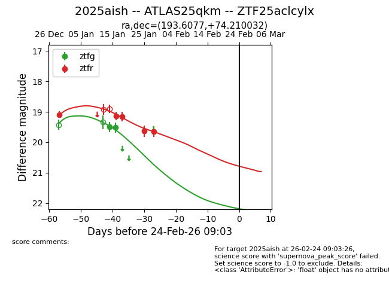
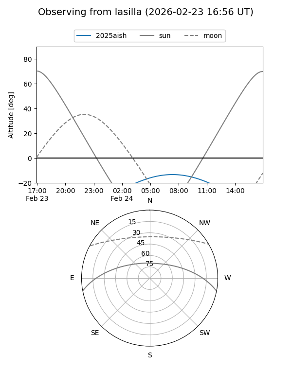
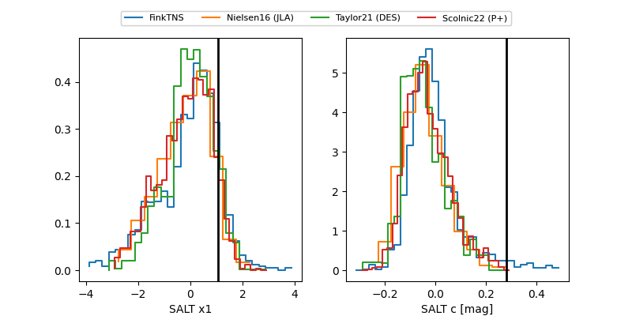

2025aish
Target 2025aish at 2025-12-29 18:54
Aliases and brokers:
FINK: fink-portal.org/ZTF25aclcylx
Lasair: lasair-ztf.lsst.ac.uk/objects/ZTF25aclcylx
ALeRCE: alerce.online/object/ZTF25aclcylx
TNS: wis-tns.org/object/2025aish
YSE: ziggy.ucolick.org/yse/transient_detail/2025aish
alt names
ZTF25aclcylx (ztf,fink_ztf)
2025aish (tns,yse)
ATLAS25qkm (atlas)
Coordinates:
equatorial (ra, dec) = 193.6077,+74.21003
equatorial (HMS+DMS) = 12:54:25.84,+74:12:36.11
galactic (l, b) = (122.6539,+42.91661)
Flags:
Photometry:
last ztfr=19.09
1 ztfr detections
Lightcurve

Visibility


Additional plots
